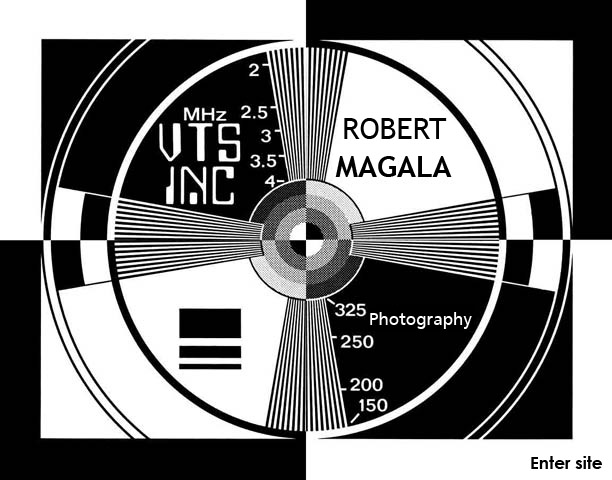

RobertMagala@gmail.com
Like us on Facebook
Follow us on Twitter
Follow us on Instagram
Photography by Robert Magala. Online portfolio includes: landscapes, cityscapes, portraits, Chicago scenes, and night photography.